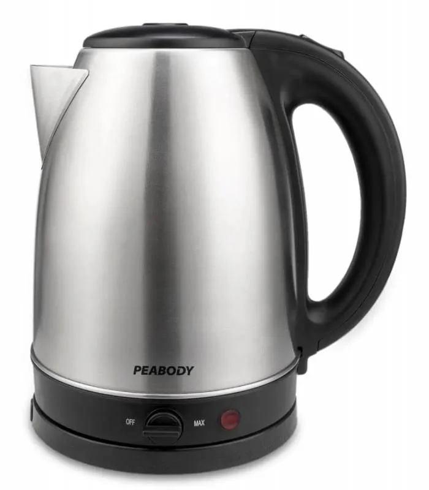

Una pava eléctrica es un electrodoméstico que calienta agua rápidamente utilizando electricidad, sin necesidad de una hornalla. Funciona mediante una resistencia en su base que transmite calor al agua, y muchos modelos modernos cuentan con apagado automático y control de temperatura digital.
